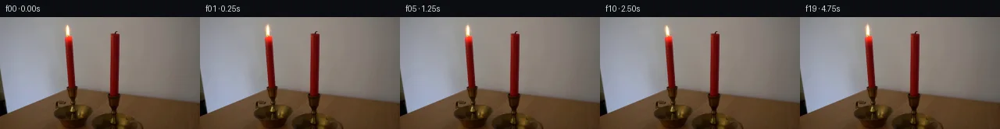

![首帧]()

Round 00
2026-11-05T01:52:50.530527+00:00像素候选变化代码 +141/−0inspection 更新
pixels 7407019e33541afa · code 00db55ce9257bfdc
查看本轮 generate.py 真实 diff
--- previous/generate.py
+++ current/generate.py
@@ -0,0 +1,141 @@
+from pathlib import Path
+
+import numpy as np
+from PIL import Image, ImageDraw, ImageEnhance
+
+from artifact_io import save
+
+
+ROOT = Path(__file__).resolve().parent
+H, W = 144, 256
+
+
+def smoothstep(edge0, edge1, x):
+ x = np.clip((x - edge0) / (edge1 - edge0), 0.0, 1.0)
+ return x * x * (3.0 - 2.0 * x)
+
+
+def bilinear_sample(field, sx, sy):
+ """Bilinearly sample an HxWxC floating-point field."""
+ hh, ww = field.shape[:2]
+ x0 = np.floor(sx).astype(np.int32)
+ y0 = np.floor(sy).astype(np.int32)
+ x1 = x0 + 1
+ y1 = y0 + 1
+ valid = (sx >= 0) & (sx <= ww - 1) & (sy >= 0) & (sy <= hh - 1)
+ x0 = np.clip(x0, 0, ww - 1)
+ x1 = np.clip(x1, 0, ww - 1)
+ y0 = np.clip(y0, 0, hh - 1)
+ y1 = np.clip(y1, 0, hh - 1)
+ wx = (sx - np.floor(sx))[..., None]
+ wy = (sy - np.floor(sy))[..., None]
+ a = field[y0, x0] * (1.0 - wx) + field[y0, x1] * wx
+ b = field[y1, x0] * (1.0 - wx) + field[y1, x1] * wx
+ return (a * (1.0 - wy) + b * wy) * valid[..., None]
+
+
+def build_flame_layers(source):
+ """Separate the photographed flame/glow from a wall estimate."""
+ source_f = source.astype(np.float32)
+ yy, xx = np.mgrid[0:H, 0:W].astype(np.float32)
+
+ # The wall is smooth here. Estimate the occluded strip per scanline from
+ # untouched samples to the left and right of the flame.
+ left = source_f[:, 70:76].mean(axis=1)
+ right = source_f[:, 103:109].mean(axis=1)
+ frac = np.clip((xx - 73.0) / 33.0, 0.0, 1.0)[..., None]
+ wall = left[:, None, :] * (1.0 - frac) + right[:, None, :] * frac
+
+ # Feathered extraction window covers the complete warm halo, but stops
+ # above the candle top so neither wax nor holder can move.
+ cx, cy = 88.4, 18.0
+ ellipse = ((xx - cx) / 16.0) ** 2 + ((yy - cy) / 17.0) ** 2
+ feather = 1.0 - smoothstep(0.47, 1.0, ellipse)
+ bottom_stop = 1.0 - smoothstep(26.0, 28.0, yy)
+ top_stop = smoothstep(2.0, 6.0, yy)
+ window = (feather * bottom_stop * top_stop)[..., None]
+
+ residual = (source_f - wall) * window
+ clean = source_f - residual
+ return clean, residual
+
+
+def render_frame(clean, residual, bend, stretch, brightness, width):
+ yy, xx = np.mgrid[0:H, 0:W].astype(np.float32)
+ anchor_x, anchor_y = 88.5, 27.0
+ # u=0 at the wick/base, u=1 near the tip. All motion vanishes at the base.
+ u = np.clip((anchor_y - yy) / 20.0, 0.0, 1.25)
+ sx = anchor_x + (xx - anchor_x - bend * u ** 1.7) / (1.0 + (width - 1.0) * u)
+ sy = anchor_y - (anchor_y - yy) / (1.0 + (stretch - 1.0) * u)
+ moved = bilinear_sample(residual, sx, sy) * brightness
+ frame = np.clip(clean + moved, 0, 255)
+ return np.rint(frame).astype(np.uint8)
+
+
+def make_transition_check(frames):
+ """Create readable adjacent-frame difference diagnostics."""
+ picks = [(0, 1), (5, 6), (11, 12), (18, 19)]
+ sheet = Image.new("RGB", (512, 336), (22, 25, 31))
+ draw = ImageDraw.Draw(sheet)
+ for i, (a, b) in enumerate(picks):
+ x = (i % 2) * 256
+ y = (i // 2) * 168
+ d = np.abs(frames[b].astype(np.int16) - frames[a].astype(np.int16))
+ energy = np.clip(d.max(axis=2) * 7, 0, 255).astype(np.uint8)
+ heat = np.zeros((H, W, 3), dtype=np.uint8)
+ heat[..., 0] = energy
+ heat[..., 1] = (energy * 0.55).astype(np.uint8)
… diff truncated; 54 more lines …